色の付いた枠のコードの、右上の「コピー」ボタンを押してください。コピーしたら、ブラウザーの「戻る」で PDF に戻れます。
前編で作った「状態を変える処理」に、画面を付けます。06 後編では React がブラウザで画面を組み立てましたが、ここでは Topcoat の view! で、サーバーが HTML を作って返します。最後に、onprem の 04 のとおりにサーバーへ持ち込む物を作ります。
style.css に、この巻で使う物を少し足した styles.css です（samples/08_topcoat_app/webapp/styles.css）。curl の出力も、実際に動かした物です（ログインのトークンの所だけ伏せた）。07 で学んだとおり、Topcoat はモジュールの並びが、そのまま URL の並びになります。
| ファイル | URL | 中身 |
|---|---|---|
src/app.rs |
/ |
依頼の一覧（と、全部の画面の外枠） |
src/app/login.rs |
/login |
ログイン |
src/app/logout.rs |
/logout |
ログアウト（POST だけ） |
src/app/requests/new.rs |
/requests/new |
新しい依頼 |
src/app/requests/id.rs |
/requests/{id}・/requests/{id}/action |
依頼の詳しい画面と、ボタンの操作 |
src/app/requests/id/edit.rs |
/requests/{id}/edit |
直して出し直す |
src/app/attachments/id.rs |
/attachments/{id} |
添付ファイルのダウンロード |
src/app/approve/token.rs |
/approve/{token} |
承認の画面（前編の 7 章） |
src/app/stats.rs |
/stats |
集計 |
src/app/health.rs |
/health |
動いているかの確かめ（監視用） |
src/app.rs:
//! 画面（ルーティング）。モジュールの並びが、そのまま URL の並びになる
//!
//! | ファイル | URL | 中身 |
//! |---|---|---|
//! | app.rs | `/` | 依頼の一覧（と、全部の画面の外枠） |
//! | app/login.rs | `/login` | ログイン |
//! | app/logout.rs | `/logout` | ログアウト（POST） |
//! | app/requests/new.rs | `/requests/new` | 新しい依頼 |
//! | app/requests/id.rs | `/requests/{id}` | 依頼の詳しい画面と、操作（`/requests/{id}/action`） |
//! | app/requests/id/edit.rs | `/requests/{id}/edit` | 直して出し直す |
//! | app/attachments/id.rs | `/attachments/{id}` | 添付ファイルのダウンロード |
//! | app/approve/token.rs | `/approve/{token}` | メールの URL から開く、承認の画面（ログイン不要） |
//! | app/stats.rs | `/stats` | 集計 |
//! | app/health.rs | `/health` | 動いているかの確かめ（監視用） |
mod approve;
pub mod attachments;
mod health;
pub mod login;
mod logout;
pub mod requests;
mod stats;
use topcoat::{
Result,
asset::{AssetBundle, RouterBuilderAssetExt, asset},
context::Cx,
cookie::RouterBuilderCookieExt,
mail::{MailConfig, RouterBuilderMailExt},
router::{BodyLimit, Router, Slot, StatusCode, error::NotFoundError, href, layout, module_router, page, query_params},
session::RouterBuilderSessionExt,
view::{View, error_boundary, view},
};
use crate::{
auth::{self, current_user, require_user},
models::fmt_date,
queries,
state::{AppState, state},
views::status_badge,
};
/// ルーターを組み立てる
pub fn router(app_state: AppState, mail: MailConfig) -> Router {
module_router!()
.assets(AssetBundle::load().expect("assets フォルダがありません（先に topcoat asset bundle を動かす）"))
.app_context(app_state) // どのページからも state(cx) で使える
.mail(mail)
.cookies()
.sessions(auth::session_config())
// 依頼の画面だけ、受け取る大きさの上限を 60MB にする（決まりは 2MB。添付 10MB×5＋図面 5MB が入るように）
.layer(BodyLimit::max(60 * 1024 * 1024).at("/requests"))
.build()
}
/// 全部の画面の外枠（ヘッダーとメニュー）
#[layout]
async fn root_layout(cx: &Cx, slot: Slot<'_>) -> Result<impl View> {
let user = current_user(cx).await?.clone();
Ok(view! {
<!DOCTYPE html>
<html lang="ja">
<head>
<meta charset="utf-8">
<meta name="viewport" content="width=device-width, initial-scale=1">
<title>"依頼・承認アプリ"</title>
<link rel="stylesheet" href=(asset!("styles.css"))>
topcoat::dev::script()
</head>
<body>
<header class="site-header">
<strong>"依頼・承認アプリ"</strong>
if let Some(u) = &user {
<nav>
<a href=(href!(home))>"依頼の一覧"</a>
<a href=(href!(requests::new::new_page))>"新しい依頼"</a>
<a href=(href!(stats::stats_page))>"集計"</a>
<span>(&u.name) "（" (u.role.label()) "）"</span>
<form method="post" action=(href!(logout::logout))>
<button type="submit" class="link">"ログアウト"</button>
</form>
</nav>
}
</header>
<main>
// ページが「見つからない（404）」で終わったら、外枠の中に案内を出す。
// ほかのエラー（ログインの画面へ移す、など）は、そのまま外へ投げ直す
error_boundary(
fallback: |error| {
if error.downcast_ref::<NotFoundError>().is_none() {
return Err(error);
}
Ok(view! {
(StatusCode::NOT_FOUND)
<h1>"見つかりません"</h1>
<p>"依頼が無いか、見る権限がありません。" <a href="/">"依頼の一覧"</a> "へ戻ってください。"</p>
})
},
(slot)
)
</main>
</body>
</html>
})
}
/// 一覧の絞り込み（?mine=1 なら、自分が出した依頼だけ）
#[query_params]
struct ListQuery {
mine: Option<String>,
}
/// 「自分が出した依頼」のリンクに付ける ?mine=1
#[derive(serde::Serialize)]
struct MineOnly {
mine: &'static str,
}
/// 依頼の一覧（トップの画面）
#[page]
async fn home(cx: &Cx) -> Result<impl View> {
let user = require_user(cx).await?;
let mine = query_params::<ListQuery>(cx).map(|q| q.mine.is_some()).unwrap_or(false);
let rows = queries::list_requests(&state(cx).pool, &user, mine).await?;
Ok(view! {
<h1>"依頼の一覧"</h1>
<p class="actions left">
<a href=(href!(home))>"見られる依頼の全部"</a>
" ｜ "
<a href=(href!(home).query(MineOnly { mine: "1" }))>"自分が出した依頼"</a>
</p>
if rows.is_empty() {
<p>"依頼はありません。"</p>
} else {
<table>
<thead>
<tr><th>"番号"</th><th>"件名"</th><th>"依頼者"</th><th>"希望の納期"</th><th>"状態"</th></tr>
</thead>
<tbody>
for r in &rows {
<tr>
<td>(r.id)</td>
<td><a href=(href!(requests::id::detail, requests::id::Id(r.id)))>(&r.title)</a></td>
<td>(&r.requester_name)</td>
<td>(fmt_date(r.due_date))</td>
<td>
status_badge(status: r.status)
if let Some(w) = &r.waiting_for {
" " <small>(w) " さんの承認待ち"</small>
}
</td>
</tr>
}
</tbody>
</table>
}
})
}
| 書き方 | 意味 |
|---|---|
.app_context(app_state) |
どのページからも state(cx) で使える物を渡す |
.mail(mail) |
メールの送り方（ファイル・SMTP リレー）を渡す |
.cookies()・.sessions(…) |
クッキーとセッションを使う（前編の 5 章） |
.layer(BodyLimit::max(…).at("/requests")) |
/requests の下だけ、受け取る大きさの上限を 60MB にする（5.3） |
#[layout] |
全部の画面の外枠（ヘッダーとメニュー） |
error_boundary(fallback: …, (slot)) |
ページが「見つからない（404）」で終わったら、外枠の中に案内を出す（10 章） |
#[query_params] |
URL の ?mine=1 を struct で受け取る |
current_user で「今だれか」を見て、ログインしていればメニューと名前を出します。ログインの画面と承認の画面では、メニューは出ません。href!(requests::id::detail, requests::id::Id(r.id)) のように、リンクは関数の名前から作ります。URL を手で書かないので、ファイルの場所を変えてもリンクが壊れません。src/views.rs:
//! いくつかの画面で使う、画面の部品（コンポーネント）
//!
//! `#[component]` を付けた関数は、`view!` の中で `status_badge(status: r.status)` のように呼べる。
//! `view!` の中の `(式)` は、HTML として危ない文字（`<` `&` など）を自動で置きかえる（XSS を防ぐ）。
use topcoat::{
Result,
view::{View, component, view},
};
use crate::{
drawing::{Drawing, Shape},
models::{RequestDetail, Status, fmt_date},
};
/// 状態の札（01 の CSS の .badge）
#[component]
pub async fn status_badge(status: Status) -> Result<impl View> {
Ok(view! { <span class=(status.css_class())>(status.label())</span> })
}
/// 間違いの一覧（無ければ何も出さない）
#[component]
pub async fn error_list(errors: &[String]) -> Result<impl View> {
Ok(view! {
if !errors.is_empty() {
<div class="errors" role="alert">
<ul>
for e in errors {
<li>(e)</li>
}
</ul>
</div>
}
})
}
/// 数を、SVG の属性に書く文字にする（小数点以下が 0 なら整数で）
fn num(v: f64) -> String {
if v.fract() == 0.0 { format!("{}", v as i64) } else { format!("{v:.1}") }
}
/// 図面を SVG で描く（サーバーで描くので、見るだけの画面には JavaScript が要らない）
#[component]
pub async fn drawing_svg(drawing: &Drawing) -> Result<impl View> {
Ok(view! {
<svg class="pad" viewBox=(format!("0 0 {} {}", num(drawing.width_mm), num(drawing.height_mm))) role="img" aria-label="図面">
for shape in &drawing.shapes {
match shape {
Shape::Rect { x, y, width, height } =>
<rect x=(num(*x)) y=(num(*y)) width=(num(*width)) height=(num(*height))></rect>,
Shape::Line { x1, y1, x2, y2 } =>
<line x1=(num(*x1)) y1=(num(*y1)) x2=(num(*x2)) y2=(num(*y2))></line>,
Shape::Text { x, y, text } =>
<text x=(num(*x)) y=(num(*y))>(text)</text>,
}
}
</svg>
})
}
/// 依頼の中身の表（詳しい画面と、承認の画面で使う）
#[component]
pub async fn request_table(r: &RequestDetail) -> Result<impl View> {
Ok(view! {
<table class="kv">
<tr><th>"件名"</th><td>(&r.title)</td></tr>
<tr><th>"依頼者"</th><td>(&r.requester_name) "（" (&r.requester_dept) "）"</td></tr>
<tr><th>"希望の納期"</th><td>(fmt_date(r.due_date))</td></tr>
<tr><th>"状態"</th><td>status_badge(status: r.status)</td></tr>
if let Some(name) = &r.assignee_name {
<tr><th>"担当"</th><td>(name)</td></tr>
}
<tr><th>"内容"</th><td class="pre">(&r.detail)</td></tr>
if !r.return_comments.is_empty() {
<tr><th>"差し戻しのコメント"</th><td class="pre">(&r.return_comments)</td></tr>
}
</table>
if let Some(d) = &r.drawing {
<h2>"図面"</h2>
drawing_svg(drawing: &d.0)
}
})
}
#[component] を付けた関数は、view! の中で status_badge(status: r.status) のように呼べます（React の部品と同じ考え方）。view! の中の (式) は、HTML として危ない文字（< > & " など）を自動で置きかえます。 件名に <script> と書かれても、画面には文字として出るだけで、動きません（XSS を防ぐ。10 の巻で詳しく）。src/app/login.rs:
//! /login … ログイン（GET で画面、POST で確かめる）
use serde::Deserialize;
use topcoat::{
Result,
context::Cx,
router::{StatusCode, content::Form, error::see_other, href, page},
view::{View, component, view},
};
use crate::auth::{self, current_user};
/// フォームから届く値（input の name と同じ名前）
#[derive(Deserialize)]
pub struct LoginForm {
employee_no: String,
password: String,
}
#[component]
async fn login_form(employee_no: &str, error: Option<&str>) -> Result<impl View> {
Ok(view! {
<h1>"ログイン"</h1>
if let Some(e) = error {
<p class="errors" role="alert">(e)</p>
}
<form method="post" class="form-grid">
<label for="employee_no">"従業員番号"</label>
<input id="employee_no" name="employee_no" required="" autocomplete="username" inputmode="numeric" value=(employee_no)>
<label for="password">"パスワード"</label>
<input id="password" name="password" type="password" required="" autocomplete="current-password">
<span></span>
<div class="actions"><button type="submit" class="btn-primary">"ログイン"</button></div>
</form>
<p class="hint">"何も操作しないと、60 分でログインが切れます。"</p>
})
}
#[page]
pub async fn login_page(cx: &Cx) -> Result<impl View> {
// もうログインしていれば、一覧へ
if current_user(cx).await?.is_some() {
return Err(see_other(href!(crate::app::home).resolve(cx)).into());
}
Ok(view! { login_form(employee_no: "", error: None) })
}
#[page(POST)]
async fn login_submit(cx: &Cx, Form(input): Form<LoginForm>) -> Result<impl View> {
if auth::login(cx, &input.employee_no, &input.password).await? {
// PRG: 成功したら 303 で一覧（GET）へ
return Err(see_other(href!(crate::app::home).resolve(cx)).into());
}
// どちらが違ったかは言わない（社員番号が正しいかどうかを、探られないように）
Ok(view! {
(StatusCode::UNAUTHORIZED)
login_form(employee_no: &input.employee_no, error: Some("従業員番号か、パスワードが違います。"))
})
}
src/app/logout.rs:
//! /logout … ログアウト（POST だけ。GET で消えると、リンクを踏ませるだけでログアウトさせられるため）
use topcoat::{
Result,
context::Cx,
router::{
error::{SeeOther, see_other},
href, route,
},
};
use crate::auth;
#[route(POST)]
pub async fn logout(cx: &Cx) -> Result<SeeOther> {
auth::logout(cx).await?;
Ok(see_other(href!(crate::app::login::login_page).resolve(cx)))
}
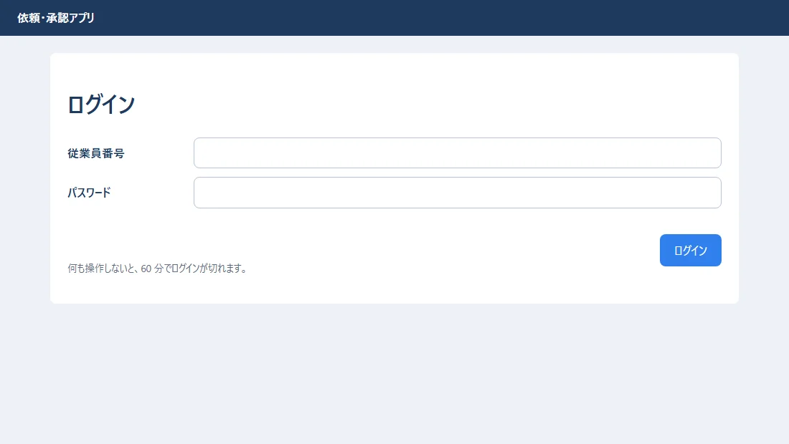
パスワードを間違えた所（状態コードは 401。入れた従業員番号は残し、パスワードは消す）:
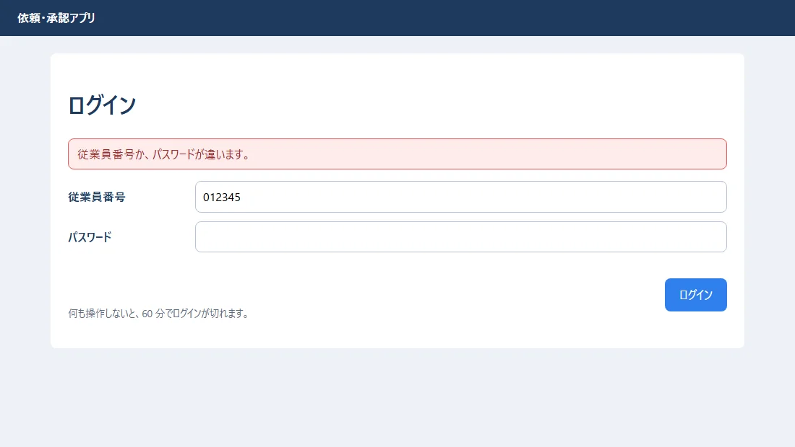
app.rs の home が一覧です。担当者（高橋さん）で開いた所:
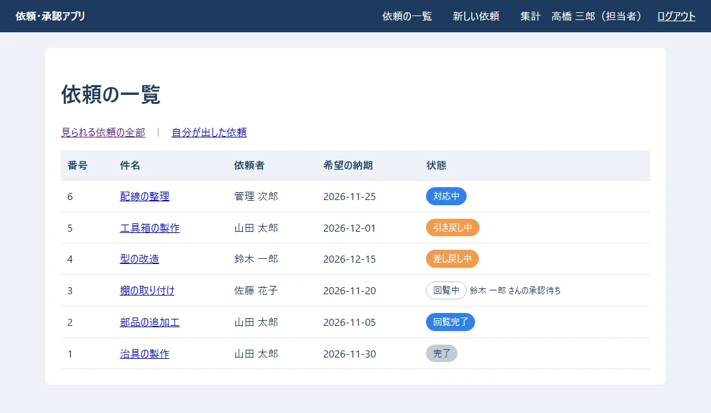
list_requests）。幅の狭い画面（560px）で開いた所（01 の CSS の @media で、ヘッダーが 2 段になる）:
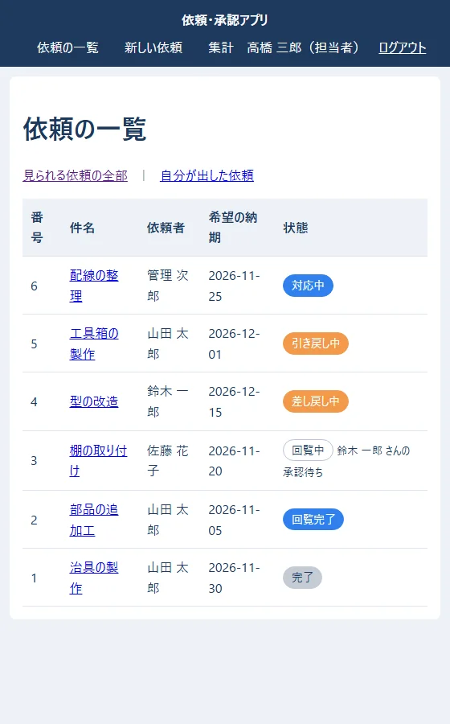
新しい依頼と、直して出し直すの 2 つの画面で、同じフォームを使います。
src/request_form.rs:
//! 依頼の入力フォーム（新しい依頼と、直して出し直すの 2 つの画面で使う）
//!
//! ファイルを送るフォームは `enctype="multipart/form-data"` で送られてくるので、
//! `Form<T>` ではなく `Multipart` で 1 項目ずつ読む。
use time::{Date, macros::format_description};
use topcoat::{
Result,
asset::asset,
router::content::multipart::Multipart,
view::{View, component, view},
};
use crate::{
drawing,
models::{AttachmentRow, Employee, RequestDetail, fmt_date},
upload::{self, UploadedFile},
views::error_list,
workflow::{MAX_APPROVERS, RequestInput},
};
/// フォームに入っている値（まだ確かめていない。間違いがあれば、このまま画面に戻す）
#[derive(Debug, Clone, Default)]
pub struct FormValues {
pub title: String,
pub detail: String,
pub due_date: String,
/// 回覧者の社員の id（選ばなかった欄は空の文字）
pub approvers: Vec<String>,
/// 図面の JSON（隠し項目）
pub drawing: String,
pub files: Vec<UploadedFile>,
}
impl FormValues {
/// 直すときは、今の依頼の値を入れておく
pub fn from_request(r: &RequestDetail, approver_ids: &[i64]) -> FormValues {
FormValues {
title: r.title.clone(),
detail: r.detail.clone(),
due_date: fmt_date(r.due_date),
approvers: approver_ids.iter().map(|id| id.to_string()).collect(),
drawing: r.drawing.as_ref().map(|d| serde_json::to_string(&d.0).unwrap_or_default()).unwrap_or_default(),
files: Vec::new(),
}
}
/// 送られてきたフォームを、1 項目ずつ読む
pub async fn read(mut multipart: Multipart) -> Result<FormValues> {
let mut v = FormValues::default();
while let Some(field) = multipart.next_field().await? {
let name = field.name().unwrap_or("").to_string();
if name == "files" {
let file_name = upload::clean_name(field.file_name().unwrap_or(""));
let bytes = field.bytes().await?;
// ファイルを選ばなかったときも、名前が空の項目が 1 つ届くので、飛ばす
if !file_name.is_empty() || !bytes.is_empty() {
v.files.push(UploadedFile { name: file_name, bytes: bytes.to_vec() });
}
continue;
}
let text = field.text().await?;
match name.as_str() {
"title" => v.title = text,
"detail" => v.detail = text,
"due_date" => v.due_date = text,
"approver" => v.approvers.push(text),
"drawing" => v.drawing = text,
_ => {} // 知らない項目は捨てる
}
}
Ok(v)
}
/// 確かめる。よければ、状態を変える処理に渡す形にする。だめなら、間違いの文を全部返す
pub fn validate(&self) -> std::result::Result<RequestInput, Vec<String>> {
let mut errors = Vec::new();
let title = self.title.trim().to_string();
if title.is_empty() {
errors.push("件名を入れてください。".to_string());
} else if title.chars().count() > 100 {
errors.push("件名は 100 文字までです。".to_string());
} else if title.chars().any(char::is_control) {
// 入力欄は 1 行だが、細工した送信なら改行を入れられる。メールの件名などに入れさせない（10 の巻）
errors.push("件名に、改行などは入れられません。".to_string());
}
if self.detail.chars().count() > 2000 {
errors.push("内容は 2000 文字までです。".to_string());
}
let due_date = Date::parse(self.due_date.trim(), format_description!("[year]-[month]-[day]")).ok();
if due_date.is_none() {
errors.push("希望の納期を、日付で入れてください。".to_string());
}
let mut approver_ids = Vec::new();
for a in self.approvers.iter().map(|a| a.trim()).filter(|a| !a.is_empty()) {
match a.parse::<i64>() {
Ok(id) => approver_ids.push(id),
Err(_) => errors.push("回覧者の選び方が違います。".to_string()),
}
}
if approver_ids.is_empty() {
errors.push("回覧者を 1 人以上選んでください。".to_string());
}
let drawing = drawing::parse(&self.drawing).unwrap_or_else(|e| {
errors.push(e);
None
});
errors.extend(upload::check_all(&self.files));
match (errors.is_empty(), due_date) {
(true, Some(due_date)) => Ok(RequestInput {
title,
detail: self.detail.trim().to_string(),
due_date,
approver_ids,
drawing,
files: self.files.clone(),
}),
_ => Err(errors),
}
}
}
/// 入力フォーム。action を書かないので、今開いている URL（同じ所）へ POST で送る
#[component]
pub async fn request_form(
values: &FormValues,
choices: &[Employee],
errors: &[String],
attachments: &[AttachmentRow],
submit_label: &str,
) -> Result<impl View> {
Ok(view! {
error_list(errors: errors)
<form method="post" enctype="multipart/form-data" class="form-grid">
<label for="title" class="required">"件名"</label>
<input id="title" name="title" required="" maxlength="100" value=(&values.title)>
<label for="detail">"内容"</label>
<textarea id="detail" name="detail" rows="5" maxlength="2000">(&values.detail)</textarea>
<label for="due" class="required">"希望の納期"</label>
<input id="due" name="due_date" type="date" required="" value=(&values.due_date)>
<label for="approver1" class="required">"回覧者"</label>
<div class="approvers">
for i in 0..MAX_APPROVERS {
let current = values.approvers.get(i).map(String::as_str).unwrap_or("");
<select id=(format!("approver{}", i + 1)) name="approver" aria-label=(format!("回覧者{}", i + 1))>
<option value="">(if i == 0 { "（選ぶ）" } else { "（なし）" })</option>
for e in choices {
let id = e.id.to_string();
<option value=(&id) selected=((id == current).then_some(""))>
(&e.dept) " " (&e.name) " " (&e.job_title)
</option>
}
</select>
}
</div>
<span class="hint">"1 人目から順に回ります（1〜3 人）。"</span>
<label>"図面"</label>
<div>
<svg id="pad" class="pad" viewBox="0 0 297 210" role="img" aria-label="図面を描く所"></svg>
<div class="actions left">
<button type="button" id="pad-undo" class="btn-secondary">"1 つ戻す"</button>
<button type="button" id="pad-clear" class="btn-secondary">"全部消す"</button>
</div>
<input type="hidden" id="drawing" name="drawing" value=(&values.drawing)>
</div>
<span class="hint">"ドラッグで四角を描きます（JavaScript が動くブラウザで）。"</span>
<label for="files">"添付ファイル"</label>
<div>
<input id="files" name="files" type="file" multiple="" accept=".jpg,.jpeg,.png,.pdf">
if !attachments.is_empty() {
<p>"付いているファイル: "
for a in attachments {
<span>(&a.original_name) " "</span>
}
</p>
}
</div>
<span class="hint">"JPG・PNG・PDF。1 つ 10MB まで・1 回に 5 つまで。"</span>
<span></span>
<div class="actions">
<button type="submit" class="btn-primary">(submit_label)</button>
</div>
</form>
<script src=(asset!("drawing.js"))></script>
})
}
#[cfg(test)]
mod tests {
use super::*;
fn values(title: &str) -> FormValues {
FormValues { title: title.into(), due_date: "2026-11-30".into(), approvers: vec!["2".into()], ..FormValues::default() }
}
#[test]
fn 正しい入力は通る() {
let input = values(" 治具の製作 ").validate().unwrap();
assert_eq!(input.title, "治具の製作"); // 前後の空白は取る
assert_eq!(input.approver_ids, vec![2]);
}
#[test]
fn 件名に改行は入れられない() {
let errors = values("治具の製作\r\nBcc: evil@example.com").validate().unwrap_err();
assert_eq!(errors, vec!["件名に、改行などは入れられません。".to_string()]);
}
}
enctype="multipart/form-data" で送られてくるので、Form<T> ではなく Multipart で、1 項目ずつ読みます（FormValues::read）。read）と、確かめる（validate）を分けました。確かめで間違いがあれば、入れた値のまま画面に戻します。間違いは、見つかった物を全部、一度に出します。<select> を 3 つ並べました（同じ name="approver" なので、送られた順に Vec に入る）。06 では、名前で探して選ぶ部品（300ms 待ってから探す）を作りました。社員が数百人までなら <select> で足ります。もっと多いなら、06 のような探す部品にします。action を書かない <form> は、今開いている URL へ送ります。GET と POST で同じ URL（/requests/new）を使うので、これで足ります。src/app/requests/new.rs:
//! /requests/new … 新しい依頼（GET で入力の画面、POST で依頼を出す）
use topcoat::{
Result,
context::Cx,
router::{StatusCode, content::multipart::Multipart, error::see_other, href, page},
view::{View, view},
};
use super::id::{Id, Msg, detail};
use crate::{
auth::require_user,
queries,
request_form::{FormValues, request_form},
state::state,
workflow::{self, WorkflowError},
};
#[page]
pub async fn new_page(cx: &Cx) -> Result<impl View> {
let user = require_user(cx).await?;
let choices = queries::approver_choices(&state(cx).pool, &user).await?;
let values = FormValues::default();
Ok(view! {
<h1>"新しい依頼"</h1>
request_form(values: &values, choices: &choices, errors: &[], attachments: &[], submit_label: "依頼を出す")
})
}
#[page(POST)]
async fn new_submit(cx: &Cx, multipart: Multipart) -> Result<impl View> {
let user = require_user(cx).await?;
let values = FormValues::read(multipart).await?;
// 1. 形を確かめる → 2. 決まりを確かめて保存する。どちらかでだめなら、入れた値のまま画面に戻す
let errors = match values.validate() {
Ok(input) => match workflow::submit(cx, &user, input).await {
// PRG: 保存できたら、303 で詳しい画面（GET）へ。再読み込みで二重に出さない
Ok(id) => return Err(see_other(href!(detail, Id(id)).query(Msg { msg: "submitted" }).resolve(cx)).into()),
Err(WorkflowError::Rule(m)) => vec![m],
Err(e) => return Err(e.into()),
},
Err(errors) => errors,
};
let choices = queries::approver_choices(&state(cx).pool, &user).await?;
// ファイルは、もう一度選んでもらう（ブラウザの決まりで、ファイルの欄には値を戻せない）
let values = FormValues { files: Vec::new(), ..values };
Ok(view! {
(StatusCode::BAD_REQUEST)
<h1>"新しい依頼"</h1>
request_form(values: &values, choices: &choices, errors: &errors, attachments: &[], submit_label: "依頼を出す")
})
}
入力した所（図面は、ドラッグで四角を 2 つ描いた。添付ファイルを 1 つ選んだ）:
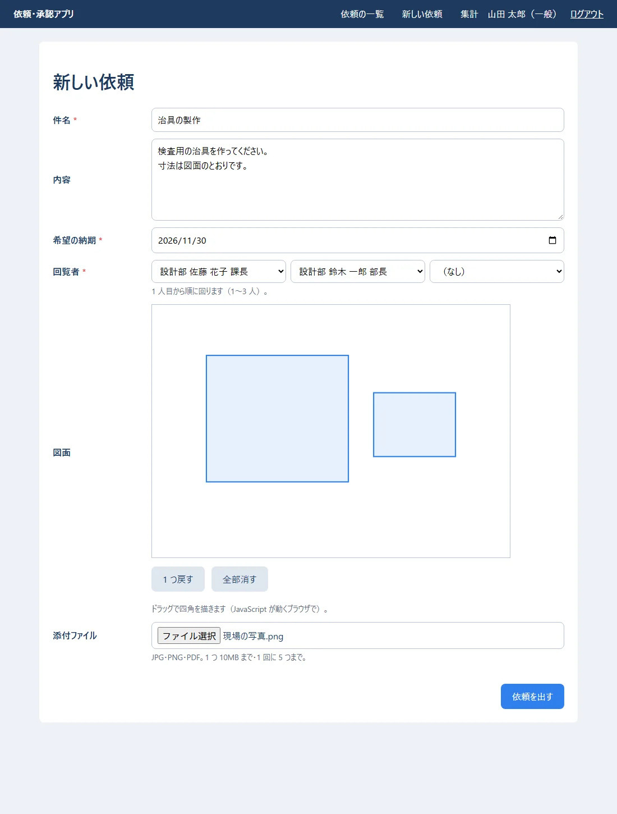
「依頼を出す」を押した所（303 で詳しい画面へ移り、上に知らせが出る）:
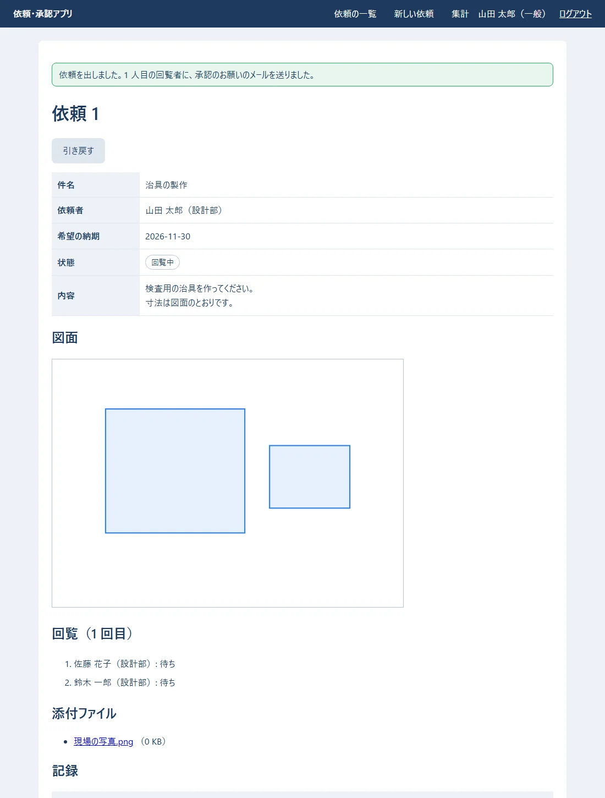
間違いがあった所（回覧者を選ばず、中身が PNG でないファイルを 写真.png という名前で付けた。状態コードは 400）:
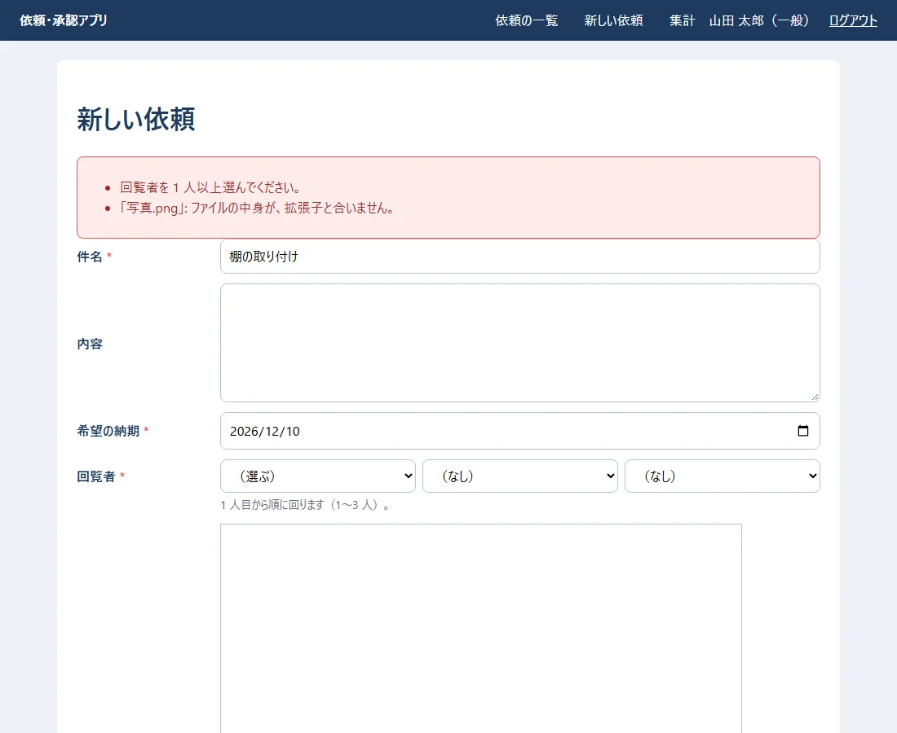
確かめること: 件名と納期は、入れた値のまま残っている。ファイルの欄は空になっている（ブラウザの決まりで、ファイルの欄には値を戻せない）。
413）。添付ファイル（1 つ 10MB・5 つまで）と図面（5MB まで）を受け取れるように、/requests の下だけ 60MB にしました（app.rs）。maxAllowedContentLength。100MB）と、アプリの上限（60MB）の、小さい方が効きます。IIS が断ると 404.13、アプリが断ると 413 です。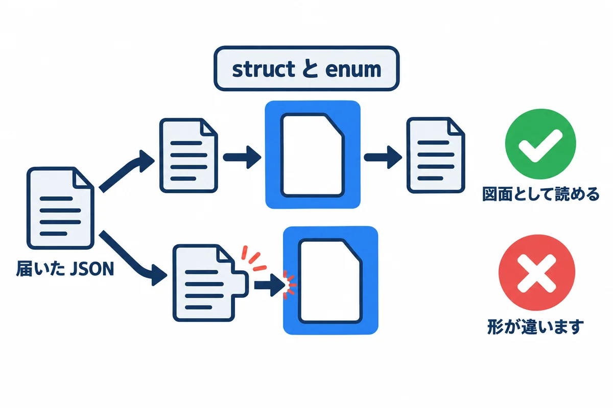
src/drawing.rs:
//! 図面（線・四角・文字）の JSON。06 の React 版と同じ形
//!
//! ```json
//! {"version":1,"widthMm":297,"heightMm":210,"shapes":[{"kind":"rect","x":10,"y":10,"width":50,"height":30}]}
//! ```
//!
//! Python では、届いた JSON の形を 1 つずつ if で確かめた（06 の validators.py）。
//! Rust では、**形を struct と enum で書いておき、serde に読ませる**。形が違えば、読み込みがエラーになる。
use serde::{Deserialize, Serialize};
pub const MAX_DRAWING_BYTES: usize = 5 * 1024 * 1024;
#[derive(Debug, Clone, PartialEq, Serialize, Deserialize)]
#[serde(rename_all = "camelCase", deny_unknown_fields)] // widthMm のような名前に合わせる。知らない項目はエラー
pub struct Drawing {
pub version: u32,
pub width_mm: f64,
pub height_mm: f64,
pub shapes: Vec<Shape>,
}
/// 図形。"kind" の値で、どの形かを見分ける
#[derive(Debug, Clone, PartialEq, Serialize, Deserialize)]
#[serde(tag = "kind", rename_all = "lowercase")]
pub enum Shape {
Rect { x: f64, y: f64, width: f64, height: f64 },
Line { x1: f64, y1: f64, x2: f64, y2: f64 },
Text { x: f64, y: f64, text: String },
}
/// フォームの隠し項目の文字を、図面にする。空なら「図面なし」（None）
pub fn parse(text: &str) -> Result<Option<Drawing>, String> {
let text = text.trim();
if text.is_empty() {
return Ok(None);
}
if text.len() > MAX_DRAWING_BYTES {
return Err("図面は 5MB までです。".into());
}
let drawing: Drawing = serde_json::from_str(text).map_err(|_| "図面の形が違います。".to_string())?;
if drawing.version != 1 {
return Err("図面の版が違います。".into());
}
if !(drawing.width_mm > 0.0 && drawing.height_mm > 0.0) {
return Err("図面の大きさが違います。".into());
}
// 図形が 1 つも無いなら、図面なしと同じに扱う
Ok(if drawing.shapes.is_empty() { None } else { Some(drawing) })
}
#[cfg(test)]
mod tests {
use super::*;
#[test]
fn 四角と線を読める() {
let d = parse(r#"{"version":1,"widthMm":297,"heightMm":210,"shapes":[
{"kind":"rect","x":10,"y":10,"width":50,"height":30},
{"kind":"line","x1":0,"y1":0,"x2":100,"y2":50}]}"#)
.unwrap()
.unwrap();
assert_eq!(d.shapes.len(), 2);
assert!(matches!(d.shapes[0], Shape::Rect { width: 50.0, .. }));
}
#[test]
fn 知らない図形はエラー() {
let err = parse(r#"{"version":1,"widthMm":297,"heightMm":210,"shapes":[{"kind":"circle","r":5}]}"#);
assert_eq!(err, Err("図面の形が違います。".to_string()));
}
#[test]
fn 空なら図面なし() {
assert_eq!(parse(""), Ok(None));
}
}
if で 1 つずつ確かめました。Rust では、形を struct と enum で書いておき、serde に読ませます。kind が "circle" のような知らない値なら、読み込みがエラーになります。deny_unknown_fields で、知らない項目が付いていても断ります。drawing.js:
// 図面のパッド: SVG の上をドラッグして四角を描き、JSON を隠し項目（#drawing）に入れる。
// JSON の形は 06 の React 版（DrawingPad.tsx）と同じ。確かめは、サーバー（drawing.rs）でもう一度する。
(() => {
const pad = document.getElementById("pad");
const input = document.getElementById("drawing");
if (!pad || !input) return;
const NS = "http://www.w3.org/2000/svg";
let drawing = { version: 1, widthMm: 297, heightMm: 210, shapes: [] };
try {
if (input.value) drawing = JSON.parse(input.value); // 直すときは、今の図面から始める
} catch {
// 読めなければ、空から始める
}
// 画面の位置（px）を、図面の位置（mm）に直す
const toMm = (e) => {
const box = pad.getBoundingClientRect();
return {
x: Math.round(((e.clientX - box.left) / box.width) * drawing.widthMm),
y: Math.round(((e.clientY - box.top) / box.height) * drawing.heightMm),
};
};
const el = (name, attrs) => {
const node = document.createElementNS(NS, name);
for (const [k, v] of Object.entries(attrs)) node.setAttribute(k, v);
return node;
};
// 図形を描き直し、隠し項目を新しくする（図形が無ければ空にする = 図面なし）
function render() {
pad.replaceChildren();
for (const s of drawing.shapes) {
if (s.kind === "rect") pad.append(el("rect", { x: s.x, y: s.y, width: s.width, height: s.height }));
if (s.kind === "line") pad.append(el("line", { x1: s.x1, y1: s.y1, x2: s.x2, y2: s.y2 }));
if (s.kind === "text") {
const t = el("text", { x: s.x, y: s.y });
t.textContent = s.text; // textContent なので、文字は文字のまま（HTML にならない）
pad.append(t);
}
}
input.value = drawing.shapes.length ? JSON.stringify(drawing) : "";
}
let start = null;
pad.addEventListener("pointerdown", (e) => {
start = toMm(e);
pad.setPointerCapture(e.pointerId);
});
pad.addEventListener("pointerup", (e) => {
if (!start) return;
const end = toMm(e);
const width = Math.abs(end.x - start.x);
const height = Math.abs(end.y - start.y);
if (width >= 2 && height >= 2) {
drawing.shapes.push({ kind: "rect", x: Math.min(start.x, end.x), y: Math.min(start.y, end.y), width, height });
}
start = null;
render();
});
document.getElementById("pad-undo")?.addEventListener("click", () => {
drawing.shapes.pop();
render();
});
document.getElementById("pad-clear")?.addEventListener("click", () => {
drawing.shapes = [];
render();
});
render();
})();
asset!("drawing.js") で、CSS と同じように束ねて配ります。<input type="hidden" name="drawing">）に入れるだけです。確かめは、サーバー（drawing::parse）でもう一度します（ブラウザから来る物は、いくらでも書きかえられるため）。textContent で入れます。innerHTML を使うと、図面の文字に <script> が入っていたときに動いてしまいます。src/app/requests/id.rs:
//! /requests/{id} … 依頼の詳しい画面と、ボタンの操作（/requests/{id}/action）
mod edit;
use serde::{Deserialize, Serialize};
use topcoat::{
Result,
context::Cx,
router::{
StatusCode,
content::Form,
error::{RouterErrorExt, not_found, see_other},
href, module_param, page, path_param, query_params,
},
view::{View, component, view},
};
use crate::{
auth::require_user,
models::{Decision, Employee, Role, Status, fmt_datetime, fmt_size},
queries::{self, FullRequest},
state::state,
views::request_table,
workflow::{self, WorkflowError},
};
// URL の {id} の部分。数でなければ 404
module_param!(pub id: i64, error = not_found);
/// 操作のあとに出す知らせ（?msg=submitted など）。文はこちらで決める（URL の文をそのまま出さない）
#[derive(Serialize)]
pub struct Msg {
pub msg: &'static str,
}
#[query_params]
struct MsgQuery {
msg: Option<String>,
}
fn message(key: &str) -> Option<&'static str> {
Some(match key {
"submitted" => "依頼を出しました。1 人目の回覧者に、承認のお願いのメールを送りました。",
"resubmitted" => "出し直しました。1 人目の回覧者から、もう一度回ります。",
"pull_back" => "引き戻しました。",
"withdraw" => "取り下げました。",
"assign" => "担当になりました。",
"complete" => "完了にしました。依頼者にメールを送りました。",
"resend" => "承認のお願いを送り直しました（前の URL は使えなくなりました）。",
_ => return None,
})
}
/// 見てよい依頼を読む。無い・見てはいけないときは、どちらも 404（あるかどうかも知らせない）
pub(crate) async fn load_visible(cx: &Cx, user: &Employee, id: i64) -> Result<FullRequest> {
let full = queries::find_request(&state(cx).pool, id).await?.ok_or_not_found()?;
if !full.visible_to(user) {
return Err(not_found().into());
}
Ok(full)
}
#[page]
pub async fn detail(cx: &Cx) -> Result<impl View> {
let user = require_user(cx).await?;
let id = *path_param::<Id>(cx)?;
let full = load_visible(cx, &user, id).await?;
let msg = query_params::<MsgQuery>(cx).ok().and_then(|q| q.msg.as_deref().and_then(message));
Ok(view! {
if let Some(m) = msg {
<p class="message" role="status">(m)</p>
}
detail_body(user: &user, full: &full, errors: &[])
})
}
/// 詳しい画面の中身（操作に失敗したときにも、同じ物を出す）
#[component]
async fn detail_body(user: &Employee, full: &FullRequest, errors: &[String]) -> Result<impl View> {
let r = &full.request;
let own = r.requester_id == user.id;
// 押せるボタンだけを出す（押されたときも、サーバーでもう一度確かめる）
let can_pull_back = own && r.status == Status::Circulating;
let can_fix = own && matches!(r.status, Status::Returned | Status::PulledBack);
let can_assign = user.role.is_staff() && r.status == Status::Approved;
let can_complete = r.status == Status::InProgress && r.assignee_id == Some(user.id);
let is_admin = user.role == Role::Admin;
Ok(view! {
<h1>"依頼 " (r.id)</h1>
crate::views::error_list(errors: errors)
<div class="actions left">
if can_pull_back {
<form method="post" action=(href!(action, Id(r.id)))>
<button name="action" value="pull_back" class="btn-secondary">"引き戻す"</button>
</form>
}
if can_fix {
<a class="btn-primary" href=(href!(edit::edit_page, Id(r.id)))>"直して出し直す"</a>
<form method="post" action=(href!(action, Id(r.id)))>
<button name="action" value="withdraw" class="btn-secondary">"取り下げる"</button>
</form>
}
if can_assign {
<form method="post" action=(href!(action, Id(r.id)))>
<button name="action" value="assign" class="btn-primary">"担当になる"</button>
</form>
}
if can_complete {
<form method="post" action=(href!(action, Id(r.id)))>
<button name="action" value="complete" class="btn-primary">"完了にする（引き渡した）"</button>
</form>
}
</div>
request_table(r: r)
<h2>"回覧（" (r.round) " 回目）"</h2>
<ol class="steps">
for s in full.current_steps() {
<li class=(format!("step-{}", s.decision.as_str()))>
(&s.approver_name) "（" (&s.approver_dept) "）: " (s.decision.label())
if let Some(at) = s.decided_at {
" " (fmt_datetime(at))
}
if is_admin && s.decision == Decision::Waiting && r.status == Status::Circulating {
" "
<form method="post" action=(href!(action, Id(r.id))) style="display:inline">
<input type="hidden" name="step_id" value=(s.id.to_string())>
<button name="action" value="resend" class="link">"承認のお願いを送り直す"</button>
</form>
}
</li>
}
</ol>
<h2>"添付ファイル"</h2>
if full.attachments.is_empty() {
<p>"ありません。"</p>
} else {
<ul>
for a in &full.attachments {
<li>
let url = href!(crate::app::attachments::id::download, crate::app::attachments::id::Id(a.id));
<a href=(url)>(&a.original_name)</a>
" （" (fmt_size(a.size)) "）"
</li>
}
</ul>
}
<h2>"記録"</h2>
<table>
<thead><tr><th>"日時"</th><th>"した人"</th><th>"したこと"</th><th>"メモ"</th></tr></thead>
<tbody>
for h in &full.histories {
<tr>
<td>(fmt_datetime(h.at))</td>
<td>(h.actor_name.as_deref().unwrap_or("（自動）"))</td>
<td>(&h.action)</td>
<td class="pre">(&h.note)</td>
</tr>
}
</tbody>
</table>
})
}
/// ボタンから届く値
#[derive(Deserialize)]
struct ActionForm {
action: String,
step_id: Option<i64>,
}
#[page(POST "./action")]
async fn action(cx: &Cx, Form(input): Form<ActionForm>) -> Result<impl View> {
let user = require_user(cx).await?;
let id = *path_param::<Id>(cx)?;
load_visible(cx, &user, id).await?; // 見られない依頼は、操作もできない
let result = match input.action.as_str() {
"pull_back" => workflow::pull_back(cx, &user, id).await.map(|_| "pull_back"),
"withdraw" => workflow::withdraw(cx, &user, id).await.map(|_| "withdraw"),
"assign" => workflow::assign(cx, &user, id).await.map(|_| "assign"),
"complete" => workflow::complete(cx, &user, id).await.map(|_| "complete"),
"resend" if user.role == Role::Admin => {
workflow::resend(cx, Some(&user), input.step_id.unwrap_or_default()).await.map(|_| "resend")
}
_ => Err(WorkflowError::Rule("この操作はできません。".into())),
};
match result {
// PRG: 303 で詳しい画面へ戻す
Ok(key) => Err(see_other(href!(detail, Id(id)).query(Msg { msg: key }).resolve(cx)).into()),
Err(WorkflowError::Rule(m)) => {
let full = load_visible(cx, &user, id).await?;
let errors = vec![m];
Ok(view! {
(StatusCode::BAD_REQUEST)
detail_body(user: &user, full: &full, errors: &errors)
})
}
Err(e) => Err(e.into()),
}
}
| 書き方 | 意味 |
|---|---|
module_param!(pub id: i64, error = not_found) |
URL の {id} の部分。数でなければ 404 |
load_visible |
無い依頼と、見てはいけない依頼は、どちらも 404（あるかどうかも知らせない） |
can_pull_back など |
押せるボタンだけを出す。押されたときも、workflow がもう一度確かめる |
#[page(POST "./action")] |
/requests/{id}/action。どのボタンかは name="action" の value で分ける |
?msg=submitted |
操作のあとの知らせ。文はこちらで決めた物だけを出す（URL の文をそのまま出さない） |
差し戻された依頼を、依頼者（山田さん）が開いた所:
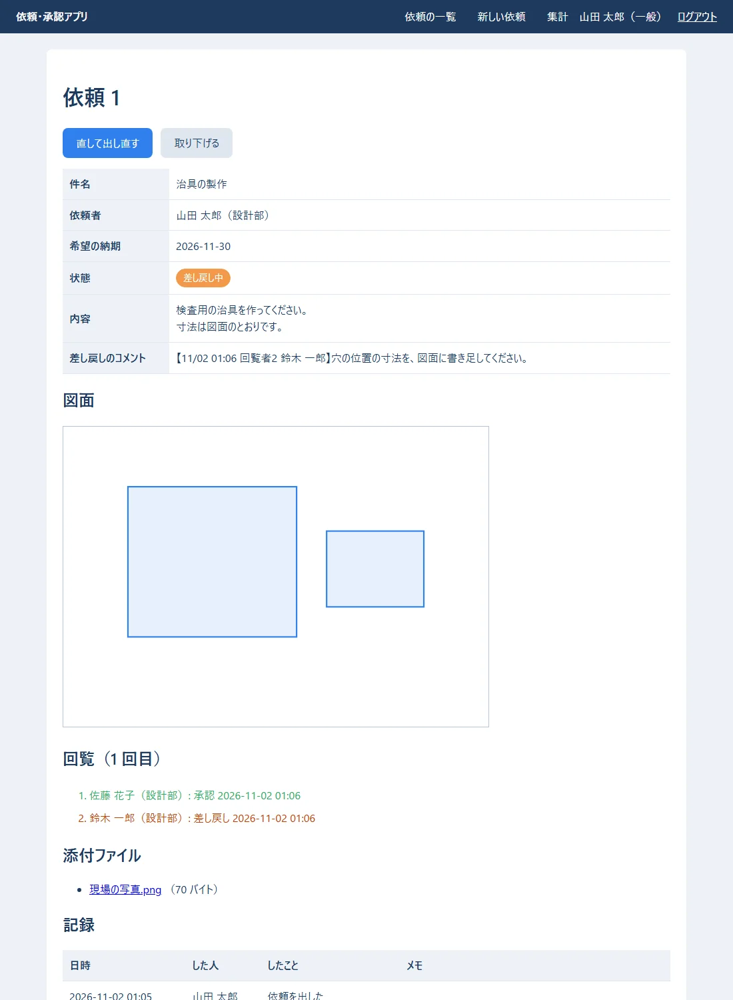
確かめること: 差し戻しのコメントに【日時 回覧者2 氏名】が付いている。回覧の 1 人目は「承認」（緑）、2 人目は「差し戻し」（オレンジ）。
src/app/requests/id/edit.rs:
//! /requests/{id}/edit … 直して出し直す（差し戻し中・引き戻し中の、自分の依頼だけ）
use topcoat::{
Result,
context::Cx,
router::{StatusCode, content::multipart::Multipart, error::see_other, href, page, path_param},
view::{View, view},
};
use super::{Id, Msg, detail, load_visible};
use crate::{
auth::require_user,
models::{Employee, Status},
queries::{self, FullRequest},
request_form::{FormValues, request_form},
state::state,
workflow::{self, WorkflowError},
};
/// 直せる依頼だけを読む（自分の・差し戻し中か引き戻し中）
async fn load_editable(cx: &Cx, user: &Employee) -> Result<FullRequest> {
let id = *path_param::<Id>(cx)?;
let full = load_visible(cx, user, id).await?;
let r = &full.request;
if r.requester_id != user.id || !matches!(r.status, Status::Returned | Status::PulledBack) {
// 直せない依頼なら、詳しい画面へ戻す
return Err(see_other(href!(detail, Id(id)).resolve(cx)).into());
}
Ok(full)
}
#[page]
pub async fn edit_page(cx: &Cx) -> Result<impl View> {
let user = require_user(cx).await?;
let full = load_editable(cx, &user).await?;
// 前の回の回覧者を、はじめから選んでおく
let approver_ids: Vec<i64> = full.current_steps().map(|s| s.approver_id).collect();
let values = FormValues::from_request(&full.request, &approver_ids);
let choices = queries::approver_choices(&state(cx).pool, &user).await?;
Ok(view! {
<h1>"依頼 " (full.request.id) " を直して出し直す"</h1>
if !full.request.return_comments.is_empty() {
<p class="errors pre">(&full.request.return_comments)</p>
}
request_form(values: &values, choices: &choices, errors: &[], attachments: &full.attachments, submit_label: "出し直す")
})
}
#[page(POST)]
async fn edit_submit(cx: &Cx, multipart: Multipart) -> Result<impl View> {
let user = require_user(cx).await?;
let full = load_editable(cx, &user).await?;
let id = full.request.id;
let values = FormValues::read(multipart).await?;
let errors = match values.validate() {
Ok(input) => match workflow::resubmit(cx, &user, id, input).await {
Ok(()) => return Err(see_other(href!(detail, Id(id)).query(Msg { msg: "resubmitted" }).resolve(cx)).into()),
Err(WorkflowError::Rule(m)) => vec![m],
Err(e) => return Err(e.into()),
},
Err(errors) => errors,
};
let choices = queries::approver_choices(&state(cx).pool, &user).await?;
let values = FormValues { files: Vec::new(), ..values };
Ok(view! {
(StatusCode::BAD_REQUEST)
<h1>"依頼 " (id) " を直して出し直す"</h1>
request_form(values: &values, choices: &choices, errors: &errors, attachments: &full.attachments, submit_label: "出し直す")
})
}
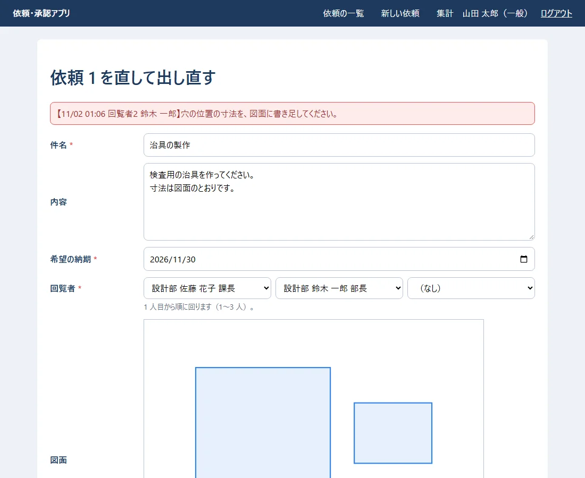
内容に 1 行足して「出し直す」を押した所（回覧は 2 回目になり、1 人目から、もう一度回る）:
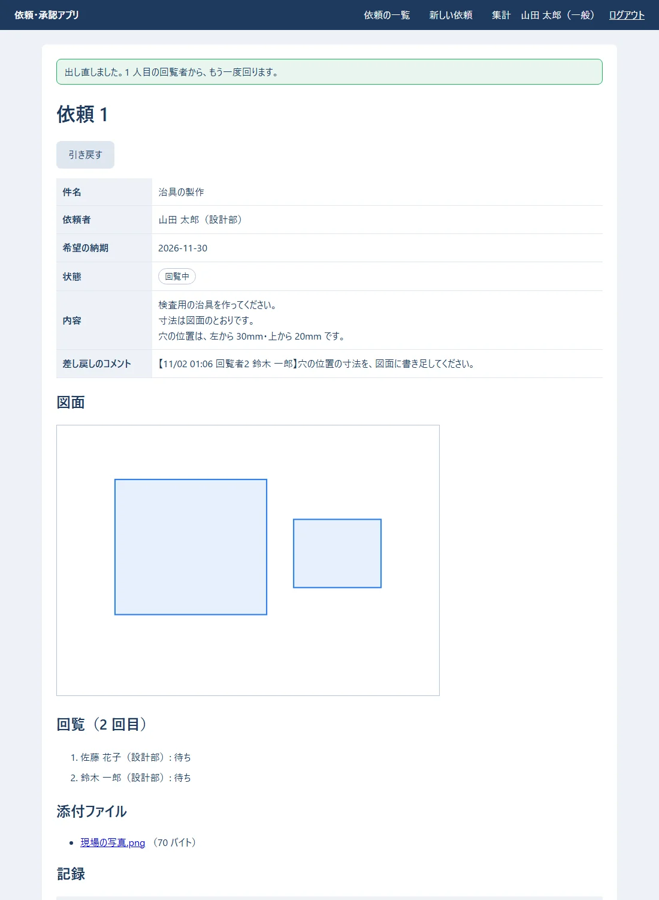
管理者でログインすると、承認を待っている回覧者の横に「承認のお願いを送り直す」が出ます。押した所:
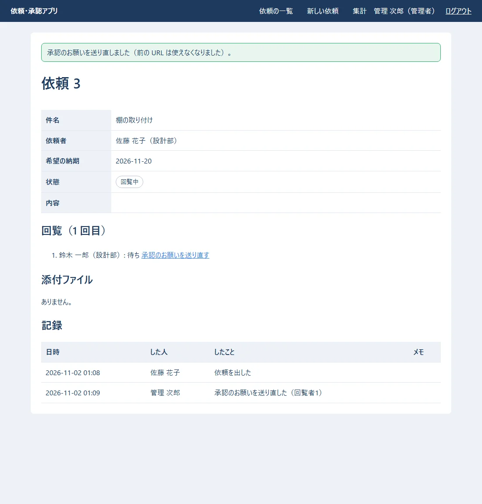
src/upload.rs:
//! 添付ファイル（JPG・PNG・PDF。1 ファイル 10MB まで・1 回に 5 ファイルまで）
//!
//! 外から来たファイルは信用しない。名前の拡張子はいくらでもごまかせるので、
//! **中身の先頭の数バイト（マジックナンバー）** でも種類を確かめる（06 の validators.py と同じ決まり）。
//! フォルダに置くときの名前は、アプリが乱数で決める（送られてきた名前は、表示とダウンロードにだけ使う）。
use std::path::{Path, PathBuf};
pub const MAX_FILE_BYTES: usize = 10 * 1024 * 1024;
pub const MAX_FILES: usize = 5;
/// 送られてきたファイル 1 つ（まだ確かめていない）
#[derive(Debug, Clone)]
pub struct UploadedFile {
pub name: String,
pub bytes: Vec<u8>,
}
/// フォルダに置いたファイル 1 つ
#[derive(Debug, Clone)]
pub struct SavedFile {
pub stored_name: String,
pub original_name: String,
pub content_type: &'static str,
pub size: usize,
}
/// 拡張子と、中身の先頭の印と、種類の名前（Content-Type）
const KINDS: &[(&str, &[u8], &str)] = &[
("jpg", b"\xff\xd8\xff", "image/jpeg"),
("jpeg", b"\xff\xd8\xff", "image/jpeg"),
("png", b"\x89PNG\r\n\x1a\n", "image/png"),
("pdf", b"%PDF-", "application/pdf"),
];
/// ブラウザによっては「C:\Users\...\図面.pdf」のように場所ごと送ってくるので、最後の名前だけにする
pub fn clean_name(name: &str) -> String {
let base = name.rsplit(['/', '\\']).next().unwrap_or("").trim();
base.chars().filter(|c| !c.is_control()).take(200).collect()
}
/// 1 ファイルを確かめる。よければ、拡張子と種類の名前を返す。だめなら、画面に出す文を返す
pub fn check(file: &UploadedFile) -> Result<(&'static str, &'static str), String> {
let ext = file.name.rsplit_once('.').map(|(_, e)| e.to_ascii_lowercase()).unwrap_or_default();
let Some(&(ext, magic, content_type)) = KINDS.iter().find(|(e, _, _)| *e == ext) else {
return Err(format!("「{}」: 添付できるのは JPG・PNG・PDF だけです。", file.name));
};
if file.bytes.len() > MAX_FILE_BYTES {
return Err(format!("「{}」: 添付ファイルは 1 つ 10MB までです。", file.name));
}
if !file.bytes.starts_with(magic) {
return Err(format!("「{}」: ファイルの中身が、拡張子と合いません。", file.name));
}
Ok((ext, content_type))
}
/// 全部を確かめる（数と、1 つずつ）。だめな物の文を全部返す
pub fn check_all(files: &[UploadedFile]) -> Vec<String> {
let mut errors = Vec::new();
if files.len() > MAX_FILES {
errors.push(format!("添付ファイルは、1 回に {MAX_FILES} つまでです。"));
}
errors.extend(files.iter().filter_map(|f| check(f).err()));
errors
}
/// 添付ファイルを置くフォルダ
pub fn attachment_dir(file_dir: &Path) -> PathBuf {
file_dir.join("attachments")
}
/// フォルダに書く。名前は乱数（32 文字の 16 進）＋拡張子
pub async fn save(file_dir: &Path, file: &UploadedFile) -> std::io::Result<SavedFile> {
let (ext, content_type) = check(file).map_err(std::io::Error::other)?; // 念のため、もう一度確かめる
let dir = attachment_dir(file_dir);
tokio::fs::create_dir_all(&dir).await?;
let mut random = [0u8; 16];
getrandom::fill(&mut random).map_err(|e| std::io::Error::other(e.to_string()))?;
let stored_name = format!("{}.{ext}", hex::encode(random));
tokio::fs::write(dir.join(&stored_name), &file.bytes).await?;
Ok(SavedFile { stored_name, original_name: file.name.clone(), content_type, size: file.bytes.len() })
}
/// 保存に失敗したときの後片付け（書いたファイルを消す）
pub async fn remove(file_dir: &Path, saved: &[SavedFile]) {
for f in saved {
let _ = tokio::fs::remove_file(attachment_dir(file_dir).join(&f.stored_name)).await;
}
}
#[cfg(test)]
mod tests {
use super::*;
fn file(name: &str, bytes: &[u8]) -> UploadedFile {
UploadedFile { name: name.into(), bytes: bytes.to_vec() }
}
#[test]
fn 中身がpdfならpdfとして通る() {
assert_eq!(check(&file("図面.PDF", b"%PDF-1.7 ...")), Ok(("pdf", "application/pdf")));
}
#[test]
fn 拡張子をpngに変えたexeは断る() {
let err = check(&file("photo.png", b"MZ\x90\x00")).unwrap_err();
assert!(err.contains("中身が、拡張子と合いません"));
}
#[test]
fn 場所ごとの名前は最後だけにする() {
assert_eq!(clean_name(r"C:\Users\sato\Desktop\図面.pdf"), "図面.pdf");
}
}
../../a.exe のような物も来うる）は、表示とダウンロードにだけ使います。finish。テスト「添付ファイルはフォルダに置き_失敗したら消す」）。src/files.rs:
//! 添付ファイルを、ブラウザへ返す（ダウンロード）
use topcoat::router::{Body, response::Response};
use crate::{models::AttachmentRow, upload};
/// フォルダからファイルを読み、ダウンロードの返事を作る
pub async fn download(file_dir: &std::path::Path, a: &AttachmentRow) -> topcoat::Result<Response> {
let bytes = tokio::fs::read(upload::attachment_dir(file_dir).join(&a.stored_name)).await?;
Ok(Response::builder()
.header("Content-Type", a.content_type.as_str())
// 開かずに保存させる。日本語の名前は filename* に、%XX の形で書く（RFC 6266）
.header("Content-Disposition", content_disposition(&a.original_name))
// ブラウザに、中身から種類を推測させない（画像のふりをした HTML を開かせない）
.header("X-Content-Type-Options", "nosniff")
.body(Body::from(bytes))?)
}
fn content_disposition(name: &str) -> String {
// 古いブラウザ向けの filename には、ASCII の文字だけを残す
let ascii: String = name.chars().map(|c| if c.is_ascii_alphanumeric() || ".-_".contains(c) { c } else { '_' }).collect();
format!("attachment; filename=\"{ascii}\"; filename*=UTF-8''{}", percent_encode(name))
}
/// URL などに書けない文字を、%XX の形にする
fn percent_encode(s: &str) -> String {
s.bytes()
.map(|b| if b.is_ascii_alphanumeric() || b"-._~".contains(&b) { (b as char).to_string() } else { format!("%{b:02X}") })
.collect()
}
#[cfg(test)]
mod tests {
use super::*;
#[test]
fn 日本語の名前は_xxの形にする() {
assert_eq!(
content_disposition("図面 A.pdf"),
"attachment; filename=\"___A.pdf\"; filename*=UTF-8''%E5%9B%B3%E9%9D%A2%20A.pdf"
);
}
}
src/app/attachments/id.rs:
//! /attachments/{id} … 添付ファイルのダウンロード（その依頼を見てよい人だけ）
use topcoat::{
Result,
context::Cx,
router::{error::RouterErrorExt, module_param, path_param, response::Response, route},
};
use crate::{app::requests::id::load_visible, auth::require_user, files, queries, state::state};
module_param!(pub id: i64, error = not_found);
#[route(GET)]
pub async fn download(cx: &Cx) -> Result<Response> {
let user = require_user(cx).await?;
let id = *path_param::<Id>(cx)?;
let st = state(cx);
let a = queries::find_attachment(&st.pool, id).await?.ok_or_not_found()?;
load_visible(cx, &user, a.request_id).await?; // 依頼を見られない人には、404
files::download(&st.config.file_dir, &a).await
}
実際のダウンロードの返事（curl -D - でヘッダーだけ見た）:
HTTP/1.1 200 OK
content-type: image/png
content-disposition: attachment; filename="_____.png"; filename*=UTF-8''%E7%8F%BE%E5%A0%B4%E3%81%AE%E5%86%99%E7%9C%9F.png
x-content-type-options: nosniff
Content-Disposition: attachment で、開かずに保存させます。日本語の名前は filename* に %XX の形で書きます（今のブラウザは、こちらを読む）。X-Content-Type-Options: nosniff で、ブラウザに中身から種類を推測させません。load_visible）。src/app/stats.rs:
//! /stats … 集計（状態ごとの件数と、担当者ごとの完了の件数）
use topcoat::{
Result,
context::Cx,
router::page,
view::{View, view},
};
use crate::{auth::require_user, models::Status, queries, state::state, views::status_badge};
#[page]
pub async fn stats_page(cx: &Cx) -> Result<impl View> {
require_user(cx).await?;
let s = queries::stats(&state(cx).pool).await?;
// 状態の文字を enum にする（知らない値は飛ばす）
let mut by_status: Vec<(Status, i64)> =
s.by_status.into_iter().filter_map(|(k, n)| Status::try_from(k).ok().map(|st| (st, n))).collect();
// 流れの順（回覧中 → … → 完了）に並べる
by_status.sort_by_key(|(st, _)| Status::ALL.iter().position(|a| a == st));
let max = by_status.iter().map(|(_, n)| *n).max().unwrap_or(1).max(1);
Ok(view! {
<h1>"集計"</h1>
<h2>"状態ごとの件数"</h2>
<table>
<thead><tr><th>"状態"</th><th>"件数"</th><th>"棒グラフ"</th></tr></thead>
<tbody>
for (status, n) in &by_status {
<tr>
<td>status_badge(status: *status)</td>
<td>(n)</td>
<td><div class="bar" style=(format!("width: {}%", n * 100 / max))></div></td>
</tr>
}
</tbody>
</table>
<h2>"担当者ごとの完了の件数"</h2>
if s.done_by_assignee.is_empty() {
<p>"まだありません。"</p>
} else {
<table>
<thead><tr><th>"担当者"</th><th>"完了"</th></tr></thead>
<tbody>
for (name, n) in &s.done_by_assignee {
<tr><td>(name)</td><td>(n)</td></tr>
}
</tbody>
</table>
}
})
}
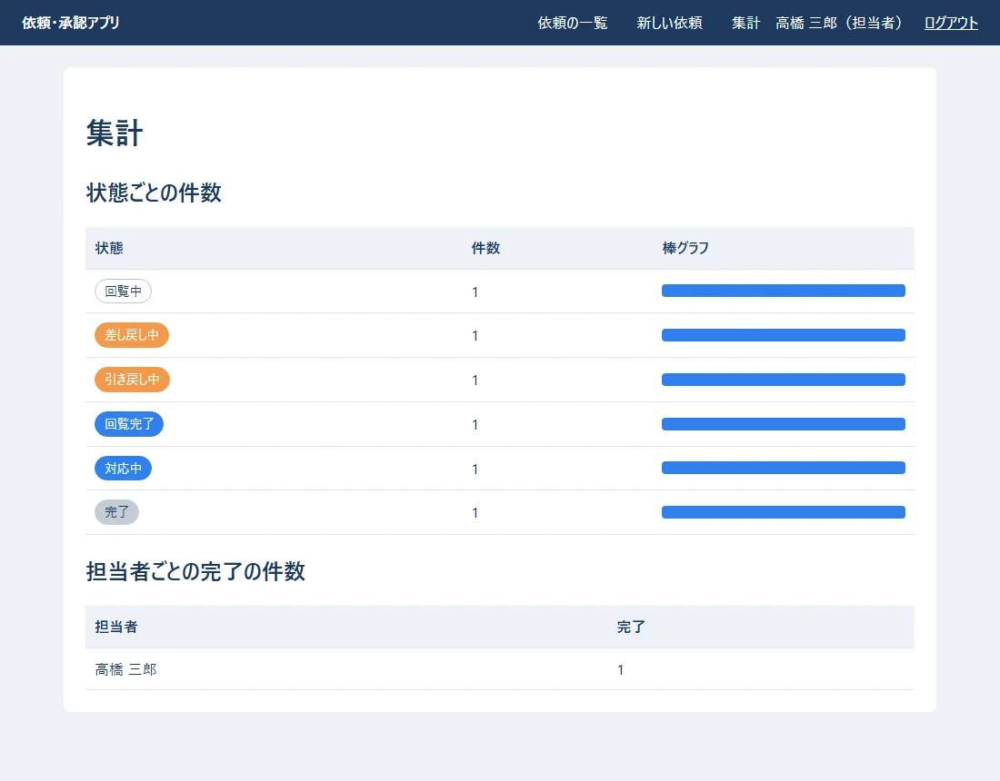
src/app/health.rs:
//! /health … 動いているかの確かめ（onprem の 04 の 12 章の監視で開く）
//!
//! データベースにも聞いてみて、答えがあれば 200「ok」。無ければ 503。
use topcoat::{
Result,
context::Cx,
router::{error::service_unavailable, route},
};
use crate::state::state;
#[route(GET)]
async fn health(cx: &Cx) -> Result<&'static str> {
match sqlx::query("SELECT 1").execute(&state(cx).pool).await {
Ok(_) => Ok("ok"),
Err(e) => {
eprintln!("health: データベースが答えません: {e}");
Err(service_unavailable(30).into()) // 30 秒後にもう一度、と知らせる
}
}
}
/health は、データベースにも SELECT 1 を聞いて、答えがあれば ok（200）、無ければ 503 を返します。onprem の 04 の 12 章の監視で使います。curl で、決まりどおりに断られるかを確かめました（実際の出力。トークンの所は伏せた）。
### 1 ログイン（成功）
HTTP/1.1 303 See Other
location: /
set-cookie: session=（トークン）; HttpOnly; SameSite=Lax; Path=/; Max-Age=3600
content-length: 0
date: Sun, 01 Nov 2026 16:10:23 GMT
### 2 別のサイトから
HTTP/1.1 403 Forbidden
content-type: text/plain; charset=utf-8
content-length: 9
date: Sun, 01 Nov 2026 16:10:23 GMT
forbidden
### 3 大きすぎる
HTTP/1.1 100 Continue
HTTP/1.1 413 Payload Too Large
content-type: text/plain; charset=utf-8
content-length: 17
date: Sun, 01 Nov 2026 16:10:23 GMT
### 4 無い依頼
HTTP/1.1 404 Not Found
content-type: text/html; charset=utf-8
vary: Accept
### 5 数でない番号
404
### 6 ダウンロード
HTTP/1.1 200 OK
content-type: image/png
content-disposition: attachment; filename="_____.png"; filename*=UTF-8''%E7%8F%BE%E5%A0%B4%E3%81%AE%E5%86%99%E7%9C%9F.png
x-content-type-options: nosniff
set-cookie: session=（トークン）; HttpOnly; SameSite=Lax; Path=/; Max-Age=3600
content-length: 70
date: Sun, 01 Nov 2026 16:10:24 GMT
### 7 見られない依頼（山田さんは、依頼4に関係しない）
404
| 確かめたこと | 結果 | 仕組み |
|---|---|---|
| 1. ログイン | 303・クッキーに Secure なし |
前編の 5 章 |
2. ほかのサイト（Origin: http://evil.example）から送る |
403 | Topcoat の OriginPolicy（Origin と Host を比べる） |
3. 2MB を超える送信（/login） |
413 | Topcoat の決まりの上限（5.3） |
| 4. 無い依頼 | 404（外枠の中に案内） | error_boundary |
5. 数でない番号（/requests/abc） |
404 | module_param!(…, error = not_found) |
| 6. 添付ファイルのダウンロード | 200 | 8.2 |
| 7. 見てはいけない依頼 | 404 | load_visible |
Origin と、宛先の Host を比べます。そのため、サーバーでは IIS が Host をそのまま渡す設定（onprem の 04 の 8.3 の preserveHostHeader）が要ります。忘れると、自分のサイトからの送信まで全部 403 になります。見つからないときの画面（外枠の中に出る）:
cargo build --release
topcoat asset bundle --release
実際の出力:
Finished `release` profile [optimized] target(s) in 54.12s
bundled assets into C:\…\08_topcoat_app\webapp\target\release\assets
できた物:
| 物 | 大きさ・中身 |
|---|---|
target\release\webapp.exe |
9,575,424 バイト（約 9.1MB） |
target\release\assets\ |
styles-….css・drawing-….js・manifest.toml |
webapp.exe と assets\ は、必ず一緒に持ち込みます（onprem の 04 の 6 章）。ファイル名の -… の所は中身から作った印なので、CSS を直すと変わります。古い assets\ と混ぜないでください。onprem の 04 の 7 章の XML に、前編の 3 章の名前で書きます。検証のサーバーでは APP_ENV=staging と MAIL_REDIRECT_TO を書きます（書かないと起動しない）。
| onprem の 04 | この巻で関係する所 |
|---|---|
| 5 章 データベースを作る | 表は、webapp.exe が起動のときに作る（前編の 4.1） |
| 6.4 HTTP 用のクッキー | src/http_cookie.rs（前編の 5.1） |
| 7 章 サービスにする（WinSW） | 環境変数の名前（前編の 3 章） |
| 7.7 初期データ | webapp.exe import-employees・grant-role・set-password（前編の 8 章） |
| 8.3 Host をそのまま渡す | OriginPolicy（10 章） |
| 8.5 送る大きさの上限 | BodyLimit（5.3） |
| 10 章 メール | SMTP_HOST・SMTP_PORT=25・STARTTLS（前編の 6.2。詳しくは 09 の巻） |
| 12.1 毎朝 8:00 の処理 | src/jobs.rs（前編の 9 章） |
確かめること: サーバーで http://webapp.example.local/health を開くと ok。ログインして依頼を出すと、1 人目に承認のお願いのメールが届く（検証では MAIL_REDIRECT_TO の宛先に届く）。
| 仕事 | 06 Django＋React | 08 Topcoat |
|---|---|---|
| URL を決める | urls.py に並べる |
モジュールの並び（module_router!） |
| 画面 | React（ブラウザ）＋ JSON の API | view!（サーバーで HTML） |
| 入力の確かめ | DRF のシリアライザー | FormValues::validate・serde |
| ログイン | Django の認証・セッション | Topcoat のセッション＋自分の sessions の表 |
| CSRF | CSRF トークン | Origin と Host を比べる |
| 状態を変える | services.py・@transaction.atomic |
workflow.rs・pool.begin() |
| 確定してから送る | transaction.on_commit |
送る物の箱（Outbox） |
| 同時に押されたら | select_for_update() |
FOR UPDATE |
| 表を作る | makemigrations・migrate |
migrations/*.sql（起動のときに流す） |
| 毎朝の通知 | タスク スケジューラ | アプリの中で 1 分ごとに確かめる |
| テスト | TestCase・mail.outbox |
#[sqlx::test]・MemoryTransport |
| サーバーに置く物 | Python・部品・React の成果物 | webapp.exe・assets\ |
どちらを選ぶかの考え方は、onprem の 03（技術スタックの比較と選定理由）にあります。
| 起きたこと | 原因 | 直し方 |
|---|---|---|
| 起動すると「assets フォルダがありません」 | topcoat asset bundle を動かしていない |
動かしてから起動する（release なら --release） |
| CSS を直したのに、画面が変わらない | 束ね直していない | topcoat asset bundle をもう一度 |
ログイン・保存などを押すと 403（本文が forbidden だけ） |
IIS が Host を書きかえている |
onprem の 04 の 8.3 の preserveHostHeader |
| ログインしても、すぐログインの画面に戻る | 決まりのクッキー（Secure 付き）のまま、HTTP で動かしている |
HttpCookieTokenStore を使う（前編の 5.1） |
添付を付けて送ると 413 |
アプリの上限を超えた | BodyLimit の値を見る（5.3） |
添付を付けて送ると 404.13 |
IIS の上限を超えた | onprem の 04 の 8.5 |
view! で required がエラーになる |
値の無い属性は、そのままでは書けない | required="" と書く |
the trait bound `&Href<…>: AttributeValueViewParts` is not satisfied |
href! で作った物を変数に入れ、& を付けて何回も使おうとした |
使う所ごとに href!(…) を書く |
| 図面を描けない | JavaScript が止まっている・drawing.js が束ねられていない |
ブラウザの開発者ツールの「コンソール」を見る |
ListQuery に項目を足し、list_requests の ORDER BY を変える）。並べ方を URL の文字から SQL に入れるときは、どう書けば安全ですか（ヒント: 前編の 6.5）。<b>太字</b> と入れて依頼を出し、一覧と詳しい画面でどう見えるかを確かめてください。なぜ太字にならないのでしょう。error_boundary(…) を外して (slot) だけにし、/requests/999 を開いてください。何が変わりますか。<select> で、同じ人を 2 回選んで送ってください。どこで、どんな文で断られますか。drawing.js に「線を引く」道具を足してください（kind: "line"）。サーバーの側は、直す必要がありますか。| 用語 | 意味 | 出てくる所 |
|---|---|---|
view! |
Rust の中に HTML を書く、Topcoat の書き方 | 1・2 |
| コンポーネント | #[component] を付けた、画面の部品の関数 |
2 |
| XSS | 画面に、ほかの人が書いたスクリプトを動かされる攻撃 | 2・6.2 |
| multipart | ファイルを含むフォームを送る形 | 5.1 |
| BodyLimit | 受け取る大きさの上限 | 5.3 |
| serde | Rust の形と、JSON などの行き来をする部品 | 6.1 |
| 資産（asset） | CSS・JavaScript・画像など、画面が使うファイル | 6.2・11 |
| OriginPolicy | Origin と Host を比べて、ほかのサイトからの送信を断る仕組み |
10 |
| CSRF | ほかのサイトのページから、勝手にフォームを送らせる攻撃 | 10 |
| error_boundary | ページのエラーを受け止めて、代わりの画面を出す仕組み | 1・10 |
| release ビルド | 速く動くように仕上げてコンパイルすること | 11 |